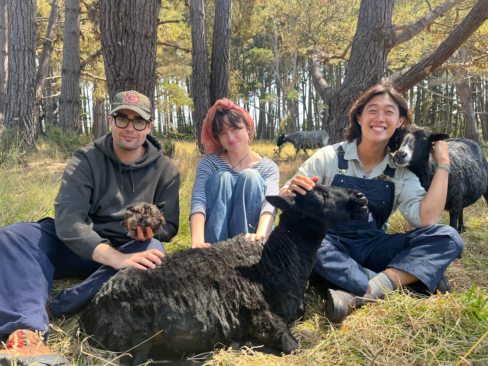
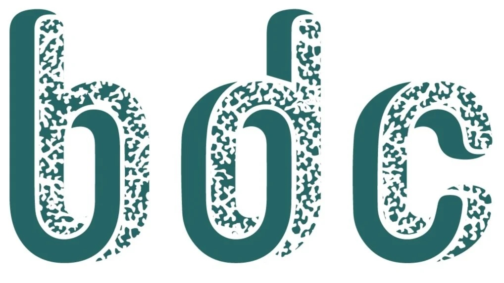
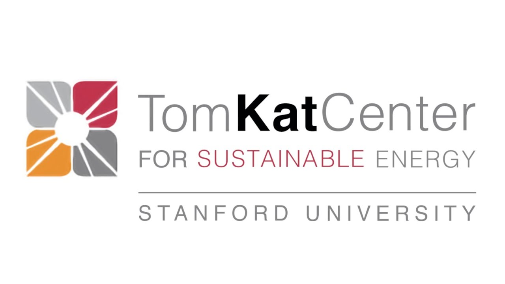
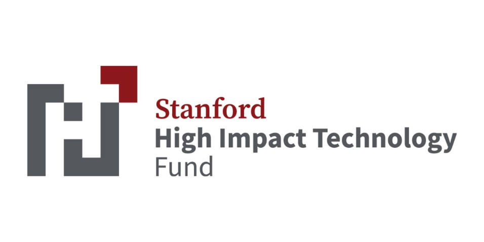
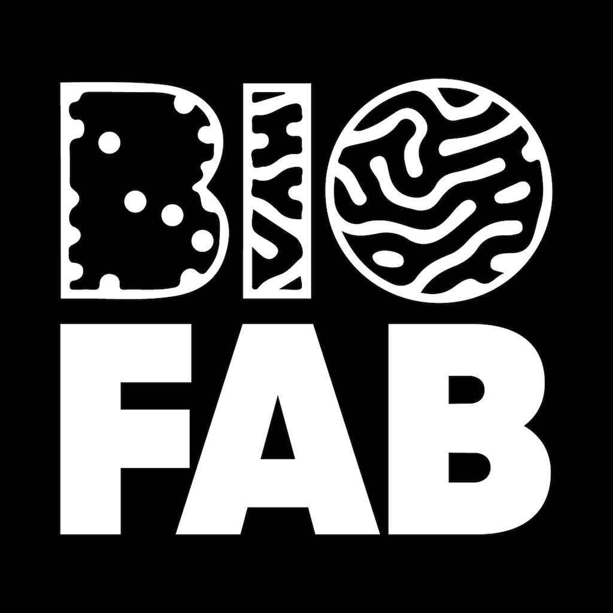
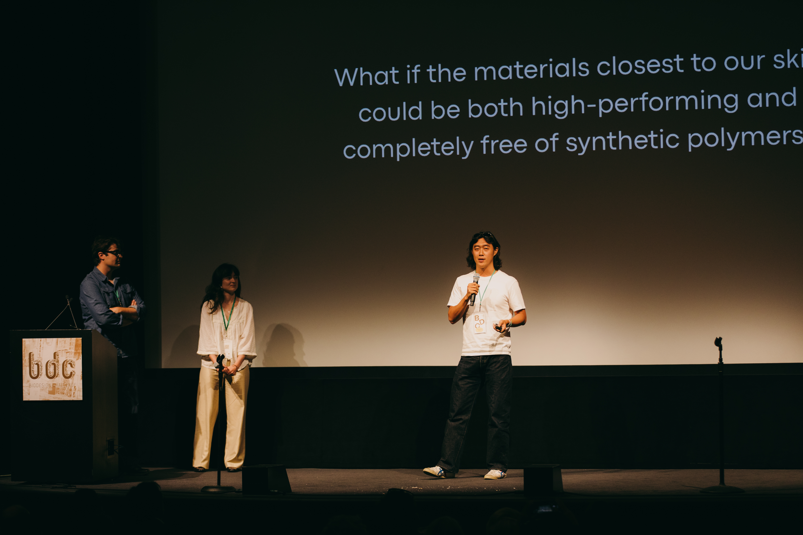

Kerra
Turning wool waste into next-generation bio-based materials.
I co-founded Kerra in 2025 around a question: what happens when the protein already going to waste on farms around the world turns out to be exactly what performance apparel needs?
Kerra develops keratin-based materials as alternatives to synthetic stretch fibers. Over two years, we raised $130,000, became finalists in the Biodesign Challenge at MoMA, and presented the project at London Design Week.
Wool is 95% keratin, the same structural protein in hair, nails, and skin. When we looked at alpha keratin's molecular structure, we became interested in its helical, elastic structure and whether it could function as a natural stretch fiber.
The synthetic stretch fibers that dominate performance apparel like cotton-spandex, nylon-spandex, and polyester-spandex are petroleum-based, non-biodegradable, and shed microplastics with every wash. They're in athletic wear, outdoor gear, underwear, leggings, and sit at the center of a massive global supply chain.
We saw an opportunity to build stretch materials from a waste stream that already exists at industrial scale.
A 3-step process to transform wool into next-generation materials.
Extract
We developed a solvent process to extract high molecular weight keratin while preserving the protein structure.
Re-tune
We tested new polymer formulations for fibers, films, and cosmetic applications using the same keratin feedstock.
Platform Supply
The long-term goal was simple: turn agricultural waste into a usable materials supply chain.


Co-founder means different things at different startups. At Kerra, it meant doing whatever the company needed, from the science to the story.
Pitch & Fundraising
Raised $130,000 through Stanford’s TomKat Center and High Impact Technology Fund by leading investor and grant pitches.
Design Direction
Led visual communication for the company, including decks, exhibitions, and presentation materials for MoMA and London Design Week.
Customer Discovery
Spoke with textile manufacturers, apparel brands, and cosmetics companies to understand where keratin-based materials could enter existing supply chains.
Supply Chain Research
Worked directly with wool producers and sheep farmers to understand how wool waste moves through the agricultural system and where value gets lost.





Kerra taught me that the most interesting problems in fashion aren't about aesthetics — they're about materials. What something is made of determines what it costs, what it does to the planet, and what it can become. That question sits underneath everything I've worked on since.